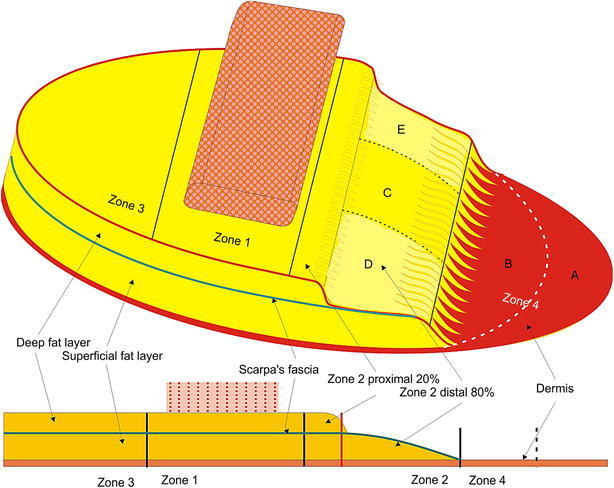
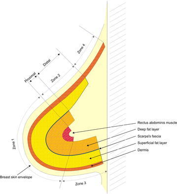

おなか（下腹部）の皮膚と皮下脂肪を、腹直筋（ふくちょくきん＝おなかの正中を縦に走る筋肉）を血流の茎（けい＝血流の通り道）として胸へ運び、乳がんなどの手術で失われた乳房を、自分自身の組織だけで作り直す方法を報告した論文です。この皮弁はのちに「横軸腹直筋皮弁（おうじくふくちょくきんひべん＝TRAM皮弁）」と呼ばれるようになりました。TRAM は transverse rectus abdominis musculocutaneous（横に走る腹直筋の筋皮弁）の略です。シリコンなどの人工物（インプラント）に頼らずに乳房を再建する、自家組織（じかそしき＝自分の体の組織）による乳房再建の代表的な術式とされ、のちに腹直筋を犠牲にしない穿通枝型のDIEP皮弁（後述）へと発展していく出発点に位置づけられます。
背景 ― 乳房を「自分の組織」で作り直す
乳がんなどのために乳房を切除（乳房切除＝にゅうぼうせつじょ、mastectomy）すると、胸に大きな組織の欠損が残ります。これを補って乳房の形を作り直すのが乳房再建で、大きく分けて、シリコンなどの人工物（インプラント）を入れる方法と、自分の体の別の場所から皮膚・脂肪などの組織を移して作る自家組織再建の2つがあります。
1980年代初頭、自家組織による乳房再建に使える皮弁（ひべん＝血流を保ったまま移す皮膚・組織の塊）はまだ限られていました。人工物に頼らず、柔らかく自然な乳房を作るには、十分な量の皮膚と脂肪を持ち、しかも目立ちにくい場所から採れるドナー（提供部位）が求められていた時期にあたります。
そこで着目されたのが下腹部です。下腹部には十分な厚みの皮膚と脂肪があり、しかもここを横長に採取すると、傷あとが下着で隠れる位置に収まり、同時におなかが引き締まる（腹部形成術＝ふくぶけいせいじゅつに近い）効果も得られます。この論文の著者らは、実際に腹部脂肪切除（abdominal lipectomy＝おなかの脂肪や余った皮膚を取る手術）を受ける患者で腹壁（ふくへき＝おなかの壁）の血管の走り方を調べており、その知見を乳房再建へ応用した点が特徴です。
この論文がしたこと
著者らは、乳房切除後の乳房再建のために、腹直筋筋皮弁（ふくちょくきんきんぴべん＝rectus abdominis musculocutaneous flap、腹直筋とその上の皮膚・脂肪をひとかたまりにした皮弁）を、島状皮弁（とうじょうひべん＝island flap、周囲の皮膚から切り離し、血管を含む茎だけでつながった状態にした皮弁）として用いる方法を報告しました。下腹部の皮膚・脂肪を、腹直筋という筋肉を血流の茎にして胸まで運ぶ、というのが基本の考え方です。
抄録によれば、著者らはまず腹壁の血管解剖（けっかんかいぼう＝血管の走り方）を、腹部脂肪切除を受ける患者において臨床的に調べています。さらに献体（けんたい＝解剖用のご遺体、cadaver）の解剖を行い、この腹直筋皮弁の解剖・回転の弧（arc of rotation＝皮弁が茎を軸にどこまで届くかを示す扇形の範囲）・デザインの選択肢（design alternatives＝皮弁の形の取り方のバリエーション）を示した、と述べています。
そのうえで、実際の手術手技を提示し、代表的な患者を示した、とされています。抄録に書かれているのはここまでで、症例数や成績の具体的な数値は記載されていません。
解剖と手技の要点
ここから先は、原著の抄録には血管名などの具体的な記載が乏しいため、その後の解剖学的研究や臨床で一般化してきた知見を含めて説明します。TRAM皮弁は、下腹部の横長（トランスバース＝横軸）の皮膚・脂肪を、片側の腹直筋につけて挙上します。
古典的な有茎（ゆうけい＝血管の茎でつながったまま移す）TRAMでは、腹直筋の上端に入る上腹壁動脈（じょうふくへきどうみゃく＝superior epigastric artery）を血流源とし、筋肉ごと胸のほうへ回転させて皮弁を運びます。ところが下腹部の皮膚・脂肪は、本来はおなかの下側から入る下腹壁動脈（かふくへきどうみゃく＝deep inferior epigastric artery）の穿通枝（せんつうし＝深部の血管から皮膚へ立ち上がる細い枝）によって主に養われています。そのため有茎TRAMでは、血流の主役ではない上側の経路を使う形になり、皮弁のうち茎から遠い端ほど血流が乏しくなる、という性質があります。
この血流の良し悪しを整理するため、後年になって皮弁を4つの領域（zone I〜IV＝ゾーン・ワンからフォー）に分けて考える見方が広まりました。茎のある腹直筋の直上（zone I）が最も血流がよく、茎から対角にある一番遠い端（zone IV）が最も乏しいとされ、手術では血流の乏しい端を切り捨てて安全な部分だけを使います。挙上した皮膚・脂肪は、そのまま胸に置くのではなく、折りたたんで乳房のふくらみ（プロジェクション＝前方への突出）を作るように胸の皮膚の袋の中へ収めます。


結果
この論文の抄録には、症例数や生着率（皮弁がどれだけ生き残ったか）といった具体的な成績の数値は記載されていません。抄録で示されているのは、腹壁の血管解剖を腹部脂肪切除の患者で臨床的に調べたこと、献体解剖によってこの皮弁の解剖・回転の弧・デザインの選択肢を示したこと、そして手術手技を提示し代表的な患者を示したこと、という4点までです。したがって本ページでも、成績に関する数値は記載しません。
言い換えれば、この原著は「大勢の患者でこれだけ成功した」という統計的な報告というより、腹直筋を茎にして下腹部の組織を胸へ運べば乳房を作れる、という新しい術式の解剖学的な裏づけ・回転の範囲・デザインの取り方・手術手技を、体系立てて提示した報告と位置づけられます。
意義 ― 自家組織乳房再建の代表術式へ
この報告は、人工物に頼らず自分の組織で乳房を作る自家組織乳房再建を、実用的な選択肢として広めた代表的な術式とされます。下腹部という「量が豊富で目立ちにくい」場所から皮膚・脂肪を運べるため、柔らかく自然な質感の乳房を作りやすく、同時におなかが引き締まる利点もあり、乳房再建の大きな柱のひとつとして定着していきました。
一方で、TRAM皮弁は血流の茎として腹直筋を犠牲にするため、おなかの壁が弱くなり、膨隆（ぼうりゅう＝おなかが前に出っ張ること）やヘルニア（腹壁の一部が飛び出す状態）が起こりうる、という弱点も指摘されるようになりました。この採取部（ドナー）の負担を減らすため、その後の乳房再建は、腹直筋をできるだけ残す方向（muscle-sparing TRAM＝筋温存型TRAM）へ、さらには腹直筋を切らずに皮膚へ立ち上がる穿通枝1本だけを追いかけて皮膚・脂肪を挙げるDIEP皮弁（ディープひべん＝deep inferior epigastric perforator flap、下腹壁動脈穿通枝皮弁）へと発展していったとされます。
DIEP皮弁のもとになった穿通枝皮弁の考え方は、本サイトでも別に解説している小柴・添田（Koshima & Soeda, 1989）の報告に代表されます。TRAM皮弁は、下腹部の組織で乳房を再建するという道筋を切り開き、その後の「筋肉を犠牲にしない」流れにつながる前段として、乳房再建の歴史の中で重要な位置を占める術式と言えます。
この論文の要点
- 乳房切除後の乳房再建として、下腹部の皮膚・脂肪を腹直筋を茎に胸へ運ぶ腹直筋筋皮弁（島状皮弁）を報告した。
- 腹壁の血管解剖を、腹部脂肪切除を受ける患者において臨床的に調べたうえで組み立てられた術式である（抄録）。
- 献体解剖により、この皮弁の解剖・回転の弧（arc of rotation）・デザインの選択肢を示した（抄録）。
- 手術手技を提示し、代表的な患者を示した。抄録には症例数・生着率などの成績の数値は記載されていない。
- 人工物に頼らない自家組織乳房再建の代表術式とされ、その後の乳房再建の礎のひとつとなった。
- 腹直筋を犠牲にする弱点から、のちに筋温存型TRAMや穿通枝型のDIEP皮弁へ発展する出発点に位置づけられる。
用語ミニ辞典
- 横軸腹直筋皮弁（TRAM皮弁）
- 下腹部の横長の皮膚・脂肪を、腹直筋を血流の茎にして胸へ運ぶ皮弁。transverse rectus abdominis musculocutaneous flap の略。人工物を使わずに乳房を再建する自家組織再建の代表術式。
- 腹直筋（ふくちょくきん）
- おなかの正中を縦に走る一対の筋肉。いわゆる「腹筋（シックスパック）」の筋肉。TRAM皮弁ではこの筋肉を血流の茎として利用する。
- 自家組織再建 / インプラント再建
- 自家組織再建は自分の体の組織（皮膚・脂肪・筋肉など）を移して乳房を作る方法。インプラント再建はシリコンなどの人工物を入れる方法。TRAMは前者の代表。
- 島状皮弁 / 筋皮弁
- 島状皮弁は周囲の皮膚から切り離し、血管を含む茎だけでつながった状態にした皮弁。筋皮弁は筋肉とその上の皮膚をひとかたまりにした皮弁。TRAMは腹直筋を含む筋皮弁を島状にして用いる。
- 上腹壁動脈 / 下腹壁動脈
- 上腹壁動脈は腹直筋の上端に入る動脈、下腹壁動脈はおなかの下側から入る動脈。下腹部の皮膚は本来おもに下腹壁動脈で養われるが、古典的な有茎TRAMは上腹壁動脈を血流源とする。
- 血流域（zone I〜IV）
- TRAM皮弁の血流の良し悪しを4つの領域に分けた整理。茎のある腹直筋直上のzone Iが最も血流がよく、対角の一番遠いzone IVが最も乏しい。手術ではzone IVの端を切り捨てる。
- 回転の弧（arc of rotation）
- 皮弁が血管の茎を軸にして、どこまで届くかを示す扇形の範囲。原著の抄録でも、この皮弁の回転の弧が献体解剖で示されたと述べられている。
- 乳房切除（にゅうぼうせつじょ / mastectomy）
- 乳がんなどの治療で乳房を切除する手術。これによって生じた胸の組織欠損を補うのが乳房再建で、TRAM皮弁はその一手段。
- DIEP皮弁
- 腹直筋を切らずに、皮膚へ立ち上がる穿通枝1本を追いかけて下腹部の皮膚・脂肪だけを挙げる皮弁。deep inferior epigastric perforator flapの略。TRAMの弱点（腹直筋の犠牲）を克服する方向で発展した術式とされる。
本ページは形成外科の学習・参照を目的とした編集部によるオリジナルの日本語解説で、原著（英語）の逐語訳・全文転載ではありません。正確な内容・数値・図は必ず上記リンク先の原著をご確認ください。
掲載している図は、原著の図ではありません。原著の図は出版社が著作権を持ち転載できないため、同じ術式・同じ解剖を扱った無料公開（オープンアクセス／CC BY）論文の図を、出典とライセンスを明記して引用しています。